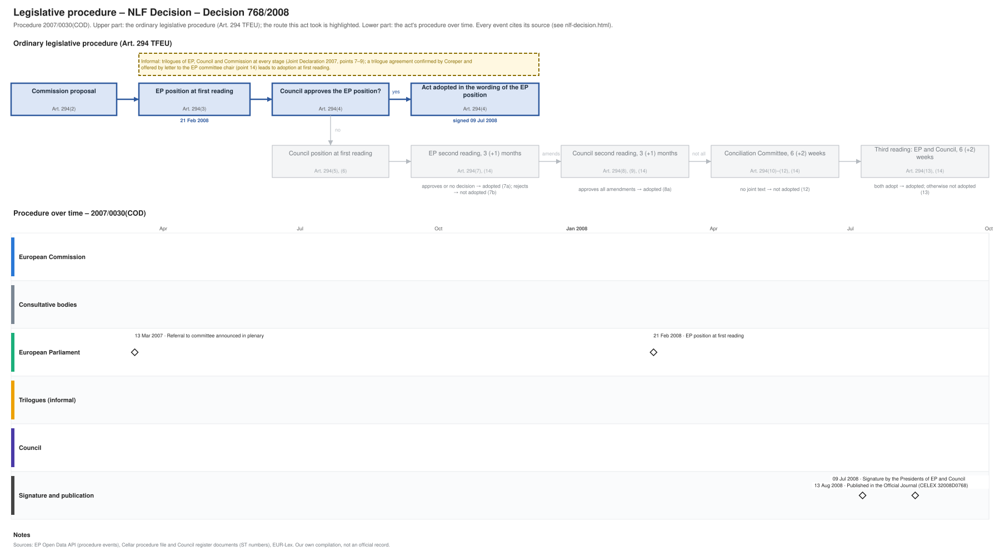

← Regulation timeline › NLF Decision › Legislative procedure · All procedures
Procedure 2007/0030(COD), completed. Drawing: SVG · PNG · PDF (A3) · draw.io · Page as Markdown: nlf-decision.md
| Stage | Completed, published 13 Aug 2008 |
|---|---|
| Latest activity | 13 Aug 2008 · Signature and publication: Published in the Official Journal (CELEX 32008D0768) |

| Date | Actor | Event | Document | Source |
|---|---|---|---|---|
| 2007-03-13 | European Parliament | Referral to committee announced in plenary | EP procedure file | EP Open Data API, procedure 2007-0030 (REFERRAL) |
| 2008-02-21 | European Parliament | EP position at first reading (Art. 294(3) TFEU) | EP procedure file | EP Open Data API, procedure 2007-0030 (PLENARY_AMEND_PROPOSAL) |
| 2008-07-09 | Signature and publication | Signature by the Presidents of EP and Council | EP procedure file | EP Open Data API, procedure 2007-0030 (SIGNATURE) |
| 2008-08-13 | Signature and publication | Published in the Official Journal | CELEX 32008D0768 · en.md de.md | EP Open Data API, procedure 2007-0030 (PUBLICATION_OFFICIAL_JOURNAL) |
Every document the Council register, the EU database of the Parliament of Austria or the EP lists for the procedure, with its state: public documents link to the official file; documents that are not public link to their entry in the Austrian database where there is one (metadata only). "Unofficially leaked": a copy is known to circulate outside the institutions; it is not published here.
| Date | Document | Kind | Subject | Status | Text |
|---|---|---|---|---|---|
| 2007-12-04 | A6-0490/2007 | ep-report | Report on the proposal for a decision of the European Parliament and of the Council on a common framework for the marketing of products | public | – |
Unofficial Markdown conversions for reading, searching and project folders; only the official document is authentic. "Read" opens the rendered text on GitHub, where a link to a provision (#art-13, #rec-12, #annex-i) jumps to it.
| Date | Stage | Document | Markdown | Read |
|---|---|---|---|---|
| 2008-08-13 | oj | CELEX 32008D0768 | en de | GitHub |
| 2025-10-22 | corrigendum | CELEX 32008D0768R(04) | de | GitHub |